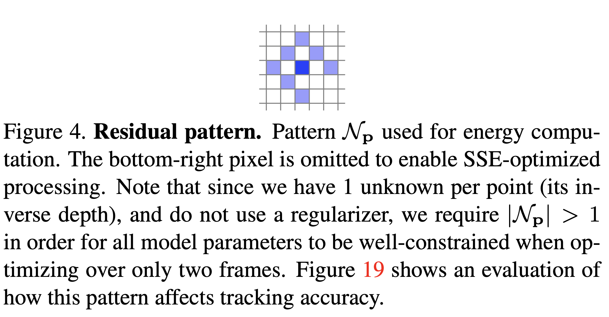

最近在阅读 DSO 论文的时候，在计算 residual 的时候，作者选取了一个奇怪的 pattern。作者提到，这是为了使用 SSE 加速而考虑的。SSE 又是什么呢？
SSE-optimized process in DSO
Direct Sparse Odometry,
J. Engel, V. Koltun and D. Cremers,
In IEEE Transactions on Pattern Analysis and Machine Intelligence, 2018. [bibtex] [pdf]
最近在阅读 DSO 论文的时候，在计算 residual 的时候，作者选取了一个奇怪的 pattern：

可见，作者把右下角的一个点给舍弃了，并说这里是为了使用 SSE 加速。当时看到这个的时候有点懵逼，后来去找了一些资料并简单看了一下代码，逐渐明了。
阅读到一篇关于讲解 SSE 加速原理的博客：
SIMD 单指令流多数据流（SingleInstruction Multiple Data, SIMD）是一种采用一个控制器来控制多个处理器，同时对一组数据（又称“数据向量”）中的每一个分别执行相同的操作从而实现空间上的并行性的技术。
而本文的主角 SSE (Streaming SIMD Extensions)，就是 SIMD 技术的一种。
Intel 对多媒体 SIMD 扩展指令集的应用很具代表性。1996 年，Intel 在其奔腾处理器上集成了 SIMD 扩展部件 MMX，其向量寄存器为64位宽。后来又相继推出了 SSE（128位宽），AVX（256位宽），IMCI 和 AVX-512（512位宽）。
所以 SSE 的寄存器为 128 位宽。实现加速的基本原理，借用上面提到的博客中的话：
我们说128位的指令位宽，那么对应的寄存器的位数就是128位，而CPU每次可以计算的数据的宽度最大也是128位。**因为我们常用的数据达不到这样的宽度，这样每个指令周期就可以执行多个数据的计算。**这就是所谓向量化计算。
由于浮点数占4个字节或者8个字节，而整数却可以分别占1,2,4个字节。按照应用场合不同使用的不同，因此向量化加速也不同。因此一个指令最多完成4个浮点数计算。而可以完成16个int8_t数据的计算。
具体到 DSO 的实现中，可以看出大概。如在 src/OptimizationBackend/MatrixAccumulators.h 文件的 99-106 行中：
...
inline void initialize()
{
A=0;
memset(SSEData,0, sizeof(float)*4*1);
memset(SSEData1k,0, sizeof(float)*4*1);
memset(SSEData1m,0, sizeof(float)*4*1);
num = numIn1 = numIn1k = numIn1m = 0;
}
...可见，DSO 中进行 SSE 加速的操作的数据类型为 float，正好 128 位的 SSE 寄存器中最多存放 4 个浮点数类型（ bit），代码中的实现也亦是如此。
本博客所有文章除特别声明外，均采用 CC BY-SA 4.0 协议 ，转载请注明出处！联系作者。